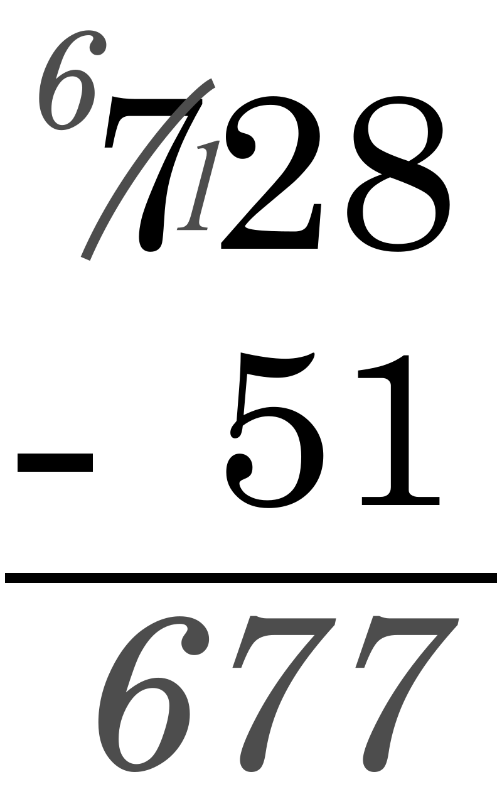

Adunarea este o operație aritmetică elementară care totalizează două sau mai multe mărimi, numite „termenii adunării” într-o singură valoare, numită suma sau „totalul” mărimilor respective.
ADUNAREA NUMERELOR NATURALE
Suma numerelor naturale a și b este un număr natural notat cu a+b, iar a și b se numesc termenii sumei.
Sumă = adunare a+b=c unde a+b sunt denumiti termenii sumei, iar c este denumit ca suma
Adunarea numerelor naturale are următoarele proprietăți :
este asociativă , adică oricare ar fi numerele naturale a , b și c, avem : (a+b)+c = a+(b+c) (3+2)+4=3+(2+4)
este comutativă , adică oricare ar fi numerele naturale a și b, avem : a+b = b+a 3+2=2+3
numărul 0 este element neutru , adică oricare ar fi numărul natural a, avem : a+0 = 0+ a = a 2+0=0+2=2
50
70
25
60
Ce este scaderea?
Scăderea este una dintre cele 4 operații aritmetice elementare; este inversul adunării, însemnând că dacă începem cu orice număr la care adăugăm orice număr, apoi scădem numărul pe care l-am adunat, ne întoarcem la numărul cu care am început.
Scăderea este reprezentată prin semnul minus.
Denumirile membrilor formulei
c - b = a
sunt descăzut (c) - scăzător (b) = diferență (a).
Scăderea este utilizată pentru patru procese înrudite:
Dintr-o mulțime, se înlătură (se scade) un număr cunoscut de elemente. Spre exemplu, din 5 mere minus 2 mere, rămân 3 mere.
Dintr-o măsură, se înlătură o cantitate măsurată în aceleași unități. Spre exemplu, dacă eu cântăresc 90 kilograme și slăbesc 5 kilograme, voi cântări 90 − 5 = 85 kilograme.
Compararea a două cantități pentru a se găsi diferența dintre ele. Spre exemplu, diferența dintre 800 lei și 600 lei este 800 − 600 = 200 lei. Acest proces mai este cunoscut sub numele de scădere comparativă.
Pentru a găsi distanța dintre două locuri la o distanță fixă de locul de plecare. Spre exemplu, dacă circul pe o autostradă și văd o bornă pe care este marcată distanța de 150 kilometri și, mai târziu, alta pe care este marcată distanța de
160 kilometri, distanța parcursă între cele două borne este de 160 − 150 = 10 kilometri.
Scăderea fundamentală: numere întregi
Fie un segment de dreaptă de lungime b, având capătul stâng notat cu a și cel drept notat cu c. Începând din a, sunt necesari b pași pentru a ajunge în c.
Această mișcare spre dreapta este reprezentată matematic prin intermediul adunării:
a + b = c
Din c, sunt necesari b pași înspre stânga pentru a reveni în punctul a. Această mișcare spre stânga este modelată matematic prin intermediul scăderii:
c - b = a
Fie un segment de dreaptă notat cu numerele 1, 2 și 3. Din poziția 3, este nevoie de 0 pași pentru a rămâne în poziția 3: 3 − 0 = 0. Sunt necesari 2 pași spre stânga pentru a ajunge pe poziția 1: 3 − 2 = 1. Această imagine nu poate ilustra ce
se întâmplă dacă se parcurg cel puțin 3 pași la stânga, începând din poziția 3. Pentru a reprezenta o astfel de operație, segmentul de dreaptă trebuie să fie extins.
Pentru a scădea numere întregi alese arbitrar, se începe cu o semidreaptă care conține toate numerele naturale (0, 1, 2, 3, 4, 5, 6, ...). Din 3, sunt necesari 3 pași pentru a ajunge la 0: 3 − 3 = 0, dar 3 − 4 este din nou o operație ce nu poate
fi reprezentată pe segmentul de dreaptă. Pentru a soluționa problema, fie o dreaptă ce conține toate numerele întregi (..., -3, -2, -1, 0, 1, 2, 3, ...). Din 3, sunt necesari 4 pași spre stânga pentru a ajunge în poziția -1: 3 - 4 = -1.>
SCĂDEREA NUMERELOR NATURALE
Oricare ar fi numerele a și b , cu a b, există un număr natural c = a – b
c se numește diferența numerelor a și b ,
iar a și b se numesc termenii diferenței .
a = descăzut , b = scăzător
DIFERENȚĂ = SCĂDERE
Observație : Scăderea nu este comutativă, nici asociativă și nu are element neutru.
Adunarea si scaderea sunt operatii inverse
a-b=c
5-3=2
c+b=a
2+3=5

Ce este inmultirea?
Produsul unui număr natural, care este diferit de 0 și 1, se exprimă printr-o sumă în care primul termen apare de atâtea ori câte arată al doilea număr natural.
Excepțiile înmulțirii:
produsul numărului natural 0 este egal cu 0;
produsul numărului natural 1 este egal cu numărul natural considerat;
0*0=050*0=045*1=45120*1=120
Proprietățile înmulțirii
a * b = b * a - comutativitatea înmulțirii;
( a * b ) * c = a * ( b * c ) - asociativitatea înmulțirii;
există un număr natural 1 numit element neutru care nu se modifică prin înmulțire;
a * ( b + c ) = a * b + a * c - distributivitatea înmulțirii față de adunare;
a * ( b - c ) = a * b - a * c - distributivitatea înmulțirii față de scădere;